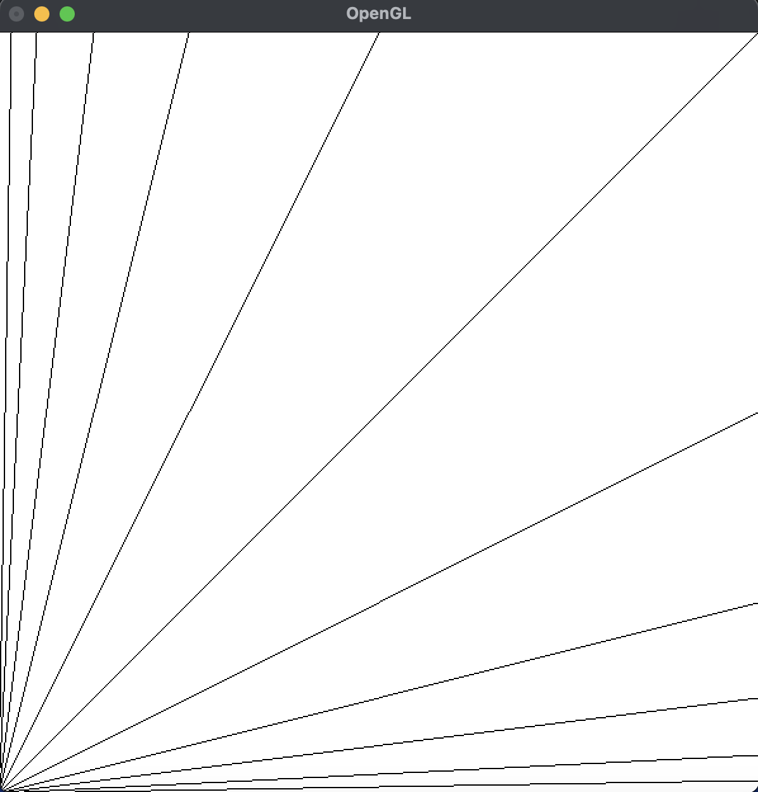
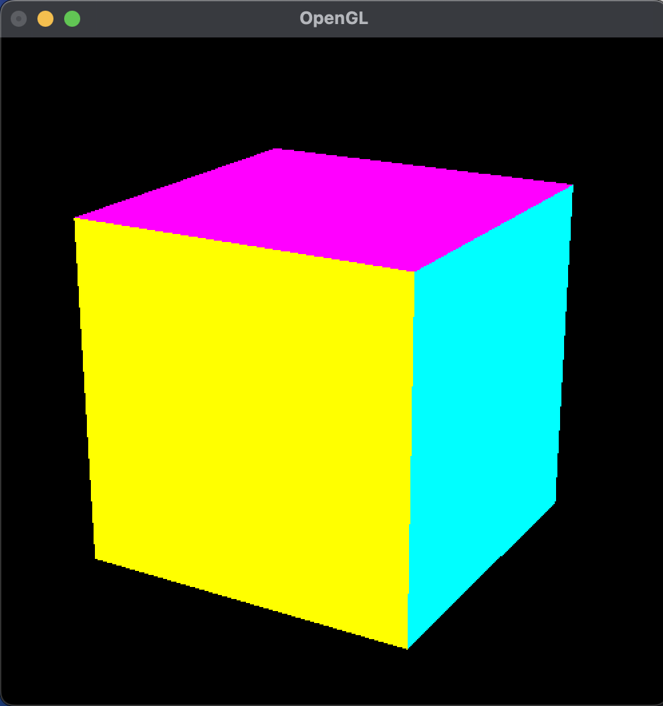
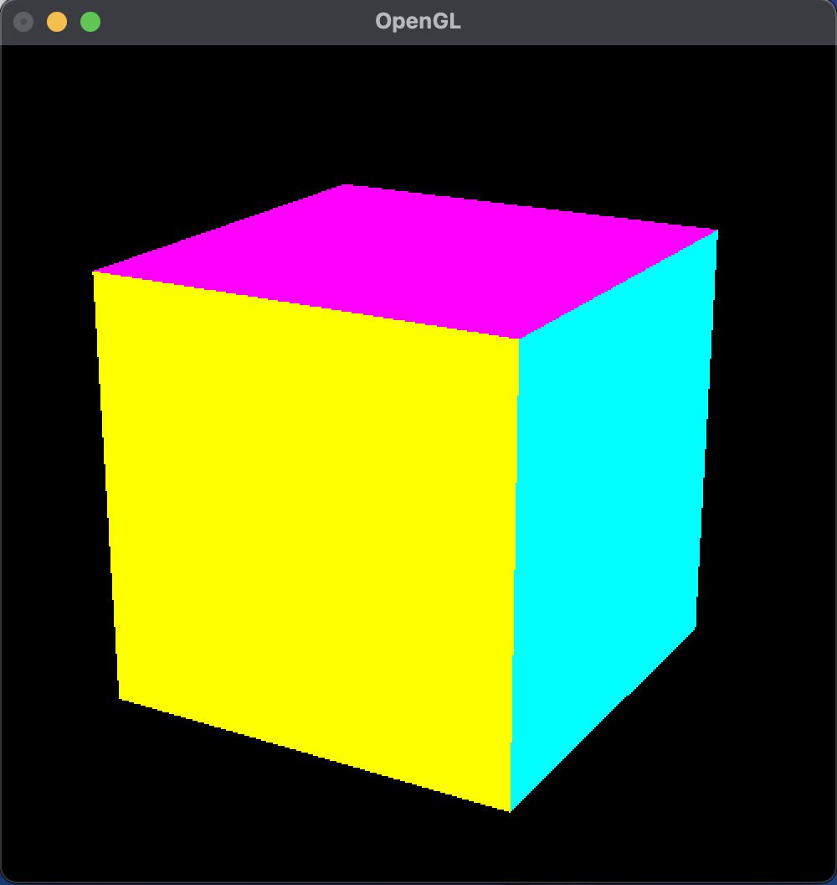
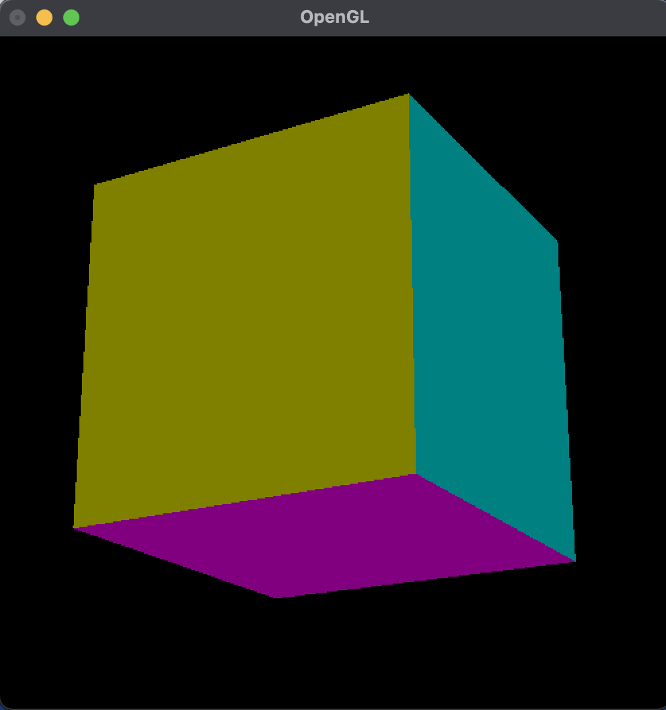
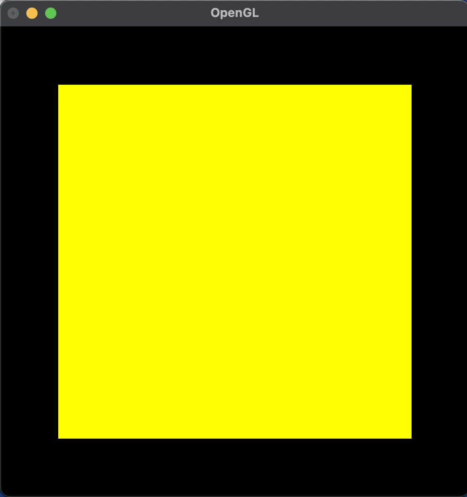
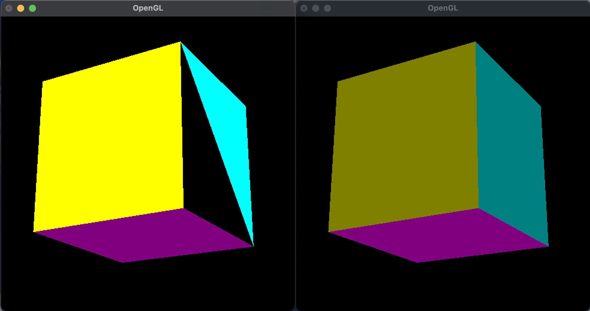
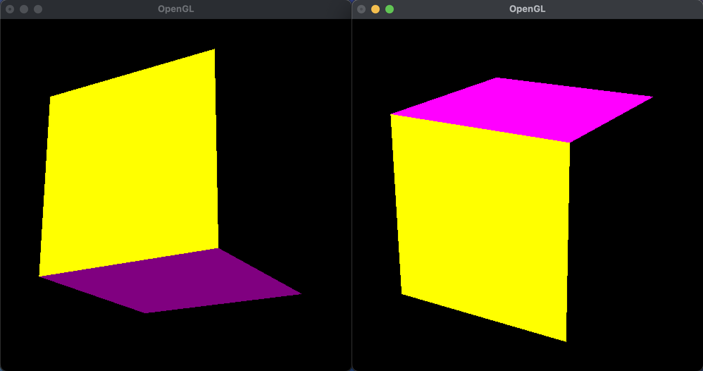
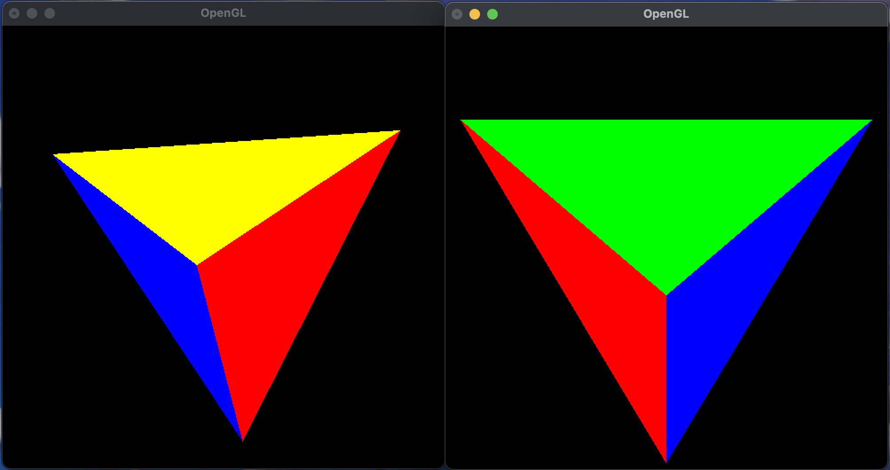
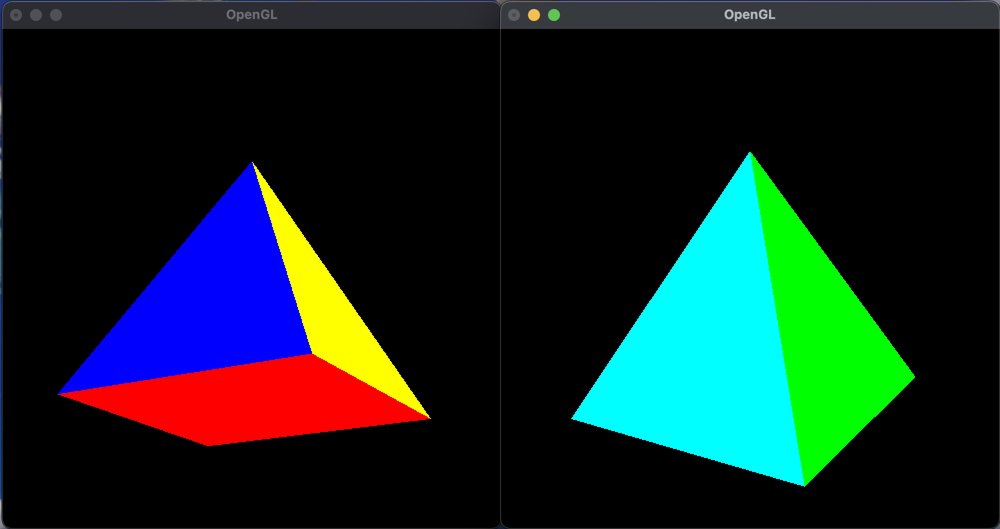

pyOpenGLによるグラフィクス/3次元グラフィクス (第 7 回)
| 氏名 | 入佐 啓士
|
|---|
| クラス | 理科 1 類 37 組
|
|---|
| 学生証番号 | J4-220897
|
|---|
□課題7.0 - 8.3節 例 1: PyOpenGLによる直線群の描画(2次元) lines.py
○プログラムリスト
(例題のため省略)
○実行コマンド
$ python lines.py
○実行結果
(文字列の表示なし)

○考察
今回はPyOpenGLを利用して直線群を描画するプログラムを走らせた。
tkinterを利用した直線群と異なる点は、原点(0,0)の位置がtkinterの場合は左上隅だったが、PyOpenGLの場合は左下隅であるという点だ。また、第二回のlines.pyのmain関数内でcanvasを作りルートフレームの実行ループを開始する処理は、PyOpenGLではGLUTライブラリを使ってコールバック関数を登録し、メインループを起動することで再現されている。
第二回の実行結果と原点の位置のみが変わる実行結果が得られたが、PyOpenGLでは描画に関わるGLライブラリですでに描画機能が備わっているので今後複雑な描画をする際に楽にプログラムが書けそうだと感じた。
□課題7.0 - 10.3節 例 1: 透視投影による立方体の描画 cubePosition.py
○プログラムリスト
(例題のため省略)
○実行コマンド
$ python cubePosition.py 4 3 7
○実行結果
(文字列の表示なし)

○考察
今回は、透視投影により1辺の長さが2の立方体を描き、任意の視点から捉えるプログラムを走らせた。
display関数のglBegin(GL_QUADS)からglEndの間でfacesの各面の頂点番号列とcolorsの描画色を指定すると対応する四角形が描画される。そして、reshape関数で視野変換、投影変換の二つの処理を行うことで3Dの立方体が描画される。
実行結果は画像の通りで、各面が異なる色で塗り分けられた3Dの立方体が描画できた。PyOpenGLでは視野変換、投影変換を行う行列を生成する関数がデフォルトで存在するので、それらを考えず、変換前の座標だけを考えて処理を書けば良いので3D立体を描くのが非常に楽だということが体験できた。
□課題7.0 - 10.3節 例 2: 多角形としての立方体の描画 cubePolygon.py
○プログラムリスト
(例題のため省略)
○実行コマンド
$ python cubePolygon.py 4 3 7
○実行結果
(文字列の表示なし)

○考察
今回は、描画要素にGL_POLYGONを利用して多角形を繰り返し描画し、透視投影を行い3Dの立方体を描画するプログラムを走らせた。
ウィンドウを作成するwindow関数とOpenGLの初期化をするinit関数、そしてシェル引数などの初期化を行うargsInit関数はcubePosition.pyで定義したものと同じものを再利用できるが、display関数は使えない。なぜなら、GL_QUADSの場合は4点ずつ四角形を描画するのに対し、GL_POLYGONでは与えられたすべての点を利用して一つの多角形が描画されるからだ。そのため4個ずつ多角形を描画するには、for文の中にBeginとEndを配置しなくてはいけないことに注意した。
実行結果は画像の通りで、cubePolygon.pyと同じ結果が得られた。今回の結果を踏まえて、GL_QUADSは複数の点を与えて、それらから4点ずつ描画を行うことができることが大きな特徴だとわかったが、cubePolygonと同じbeginとendの位置でも同様の結果が得られると思ったため、それを次のセクションで考察しようと思う。
□課題7.0 - 10.3節 例 2-2: 透視投影による立方体の描画 cubePosition2.py
○プログラムリスト
1 import sys
2 from OpenGL.GL import *
3 from OpenGL.GLU import *
4 from OpenGL.GLUT import *
5
6
7 eyex, eyey, eyez = (4, 3, 7)
8 vertices = ((-1, -1, -1), (1, -1, -1), (1, 1, -1), (-1, 1, -1), (-1, -1, 1), (1, -1, 1), (1, 1, 1), (-1, 1, 1))
9 faces = ((1, 2, 6, 5), (2, 3, 7, 6), (4, 5, 6, 7), (0, 4, 7, 3), (0, 1, 5, 4), (0, 3, 2, 1))
10 colors = ((0, 1, 1), (1, 0, 1), (1, 1, 0), (0, 0.5, 0.5), (0.5, 0, 0.5), (0.5, 0.5, 0))
11
12
13 def window(width = 500, height = 500):
14 width
15 height
16 glutInit(sys.argv)
17 glutInitDisplayMode(GLUT_RGB | GLUT_SINGLE | GLUT_DEPTH)
18 glutInitWindowSize(width, height)
19 glutInitWindowPosition(0, 0)
20 glutCreateWindow(b'OpenGL')
21
22
23 def init():
24 glClearColor(0, 0, 0, 1)
25 glEnable(GL_DEPTH_TEST)
26 glEnable(GL_CULL_FACE)
27
28
29 def argsInit():
30 global eyex, eyey, eyez
31 if len(sys.argv) > 3:
32 args = sys.argv[1:]
33 else:
34 args = input("eyex eyey eyez or [] -> ").split()
35 if len(args) >= 3:
36 eyex, eyey, eyez = (float(args[0]), float(args[1]), float(args[2]))
37
38
39 def reshape(width, height):
40 width
41 height
42 global eyex, eyey, eyez
43 fieldOfView, near, far = (25, 1, 20)
44 aspect = width / height
45 glViewport(0, 0, width, height)
46 glMatrixMode(GL_PROJECTION)
47 glLoadIdentity()
48 gluPerspective(fieldOfView, aspect, near, far)
49 glMatrixMode(GL_MODELVIEW)
50 glLoadIdentity()
51 gluLookAt(eyex, eyey, eyez, 0, 0, 0, 0, 1, 0)
52
53
54 def display():
55 glClear(GL_COLOR_BUFFER_BIT | GL_DEPTH_BUFFER_BIT)
56 # この下の四角形の描画部分のBeginとEndの位置を変更した。
57 for i in range(len(faces)):
58 glBegin(GL_QUADS)
59 glColor3fv(colors[i])
60 for j in range(len(faces[i])):
61 glVertex3dv(vertices[faces[i][j]])
62 glEnd()
63 glFlush()
64
65
66 def loop():
67 glutReshapeFunc(reshape)
68 glutDisplayFunc(display)
69 glutMainLoop()
70
71
72 def main():
73 window()
74 init()
75 argsInit()
76 loop()
77
78
79 if __name__ == "__main__":
80 main()
○実行コマンド
$ python cubePosition2.py 4 3 7
○実行結果
(文字列の表示なし)
○考察
今回は、BeginとEndの位置を変えて3D立方体を描画するプログラムを走らせて、glBegin(GL_QUADS)とglEndの位置をfor文の中に入れてcubePosition.pyの実行結果が得られるかどうかを検証した。
GL_QUADSが四角形を描画するためのものだとすると4点ずつ指定するのが自然だと考えたため、56行目のようにfor文の中に入れても同様の結果が得られると予想した。
実行結果は画像の通りで推測通りcubePosition.pyと同じ結果が得られた。
□課題7.0 - 章末課題 : 視点位置 cubePosition.py
○プログラムリスト
(例題と同じプログラムのため省略)
○実行コマンド
$ python cubePosition.py -4 -3 -7
$ python cubePosition.py 0 0 7
$ python cubePosition.py 4 -3 7
○実行結果
(文字列の表示なし)



○考察
今回は例題1と同じ透視投影による立方体の描画のプログラムを走らせて、シェル引数の異なる座標を入力することで様々な視点からの画像の作成した。
一つ目では(4, 3, 7)の正反対の位置の視点から捉えてみた。すると例題1と比べて色が暗くなり、下側から覗き上げる視点となった。色が暗くなるのはcolorsでRGBを0.5で指定しているものがあるからだ。
二つ目では(0, 0, 7)の真正面の位置の視点から捉えてみた。すると画像の通りに3Dではなく平面が見えた。それは立方体を描く時の注視点である原点を真横から見る形になるからだ。
三つ目では(4, -3, 7)の下側の位置の視点から捉えてみた。すると例題1とは異なり下側から覗き上げる形となった。
以上実験した通り、シェル引数で入力する視点の座標を変更するだけで、立方体の見え方が全く異なった。この方法を応用して連続的に視点の位置を変え続ければくるくる回転した立方体が描けるかもしれないと思った。
□課題7.0 - 章末課題 : 立体データの意味 cubeDataAnalysis.py
○プログラムリスト
1 import sys
2 from OpenGL.GL import *
3 from OpenGL.GLU import *
4 from OpenGL.GLUT import *
5
6
7 eyex, eyey, eyez = (4, 3, 7)
8 vertices = ((-1, -1, -1), (1, -1, -1), (1, 1, -1), (-1, 1, -1), (-1, -1, 1), (1, -1, 1), (1, 1, 1), (-1, 1, 1))
9 faces = ((1, 2, 5, 6), (2, 3, 7, 6), (4, 5, 6, 7), (0, 4, 7, 3), (0, 1, 5, 4), (0, 3, 2, 1)) # cubeDataAnalysis2.pyは{1, 2, 6, 5}を{5, 6, 2, 1}にしたもの
10 colors = ((0, 1, 1), (1, 0, 1), (1, 1, 0), (0, 0.5, 0.5), (0.5, 0, 0.5), (0.5, 0.5, 0))
11
12
13 def window(width = 500, height = 500):
14 width
15 height
16 glutInit(sys.argv)
17 glutInitDisplayMode(GLUT_RGB | GLUT_SINGLE | GLUT_DEPTH)
18 glutInitWindowSize(width, height)
19 glutInitWindowPosition(0, 0)
20 glutCreateWindow(b'OpenGL')
21
22
23 def init():
24 glClearColor(0, 0, 0, 1)
25 glEnable(GL_DEPTH_TEST)
26 glEnable(GL_CULL_FACE)
27
28
29 def argsInit():
30 global eyex, eyey, eyez
31 if len(sys.argv) > 3:
32 args = sys.argv[1:]
33 else:
34 args = input("eyex eyey eyez or [] -> ").split()
35 if len(args) >= 3:
36 eyex, eyey, eyez = (float(args[0]), float(args[1]), float(args[2]))
37
38
39 def reshape(width, height):
40 width
41 height
42 global eyex, eyey, eyez
43 fieldOfView, near, far = (25, 1, 20)
44 aspect = width / height
45 glViewport(0, 0, width, height)
46 glMatrixMode(GL_PROJECTION)
47 glLoadIdentity()
48 gluPerspective(fieldOfView, aspect, near, far)
49 glMatrixMode(GL_MODELVIEW)
50 glLoadIdentity()
51 gluLookAt(eyex, eyey, eyez, 0, 0, 0, 0, 1, 0)
52
53
54 def display():
55 glClear(GL_COLOR_BUFFER_BIT | GL_DEPTH_BUFFER_BIT)
56 glBegin(GL_QUADS)
57 for i in range(len(faces)):
58 glColor3fv(colors[i])
59 for j in range(len(faces[i])):
60 glVertex3dv(vertices[faces[i][j]])
61 glEnd()
62 glFlush()
63
64
65 def loop():
66 glutReshapeFunc(reshape)
67 glutDisplayFunc(display)
68 glutMainLoop()
69
70
71 def main():
72 window()
73 init()
74 argsInit()
75 loop()
76
77
78 if __name__ == "__main__":
79 main()
○実行コマンド
$ python cubeDataAnalysis.py 4 -3 7 & python cubeDataAnalysis.py -4 -3 -7
$ python cubeDataAnalysis2.py 4 -3 7 & python cubeDataAnalysis2.py 4 3 7
○実行結果
(文字列の表示なし)


○考察
今回は、透視投影による立方体の描画のプログラムのfacesを書き換えることで、描画される立方体の変化を確認するプログラムを走らせた。
一つ目の画像は、facesの最初の(1, 2, 6, 5)を(1, 2, 5, 6)に変更し、視点を(4, -3, 7)と(-4, -3, -7)で確認したものである。画像の通り、立方体のシアン色の面が4頂点中3点を結んだ三角形のみが色付けされている。facesは面を構成する4頂点の番号をもち、今回は6と5の順番を入れ替えただけだが3角形の描画になってしまった。これは、60行めでglVertex3dvに受け渡す頂点の順番が時計回り(反時計回り)ではなかったため起こっていると推測した。
二つ目の画像は、facesの最初の(1, 2, 6, 5)を(5, 6, 2, 1)に変更し、視点を(4, -3, 7)と(4, 3, 7)で確認したものである。画像の通り、元々立方体のシアン色で塗られていた面がなくなっていることがわかる。この場合一つ目の推測とは異なり、5→6→2→1と時計回りに入力しているが面が描画されていないため、他に理由があると考えた。
そこで二つ目の場合のfacesのそれぞれのタプルの頂点の順番を調べたところ(5, 6, 2, 1)だけが時計回りであることがわかった。つまり二つ目プログラムで面が描画されていないように見えたのは裏面が見えていたためだと考えられる。以上のことから正しく立方体の描画するためには、頂点の順番を反時計回りに指定することが必要だと考えた。
□課題7.0 - 章末課題: その他の立体データ tetrahedron.py
○プログラムリスト
1 import sys
2 from OpenGL.GL import *
3 from OpenGL.GLU import *
4 from OpenGL.GLUT import *
5
6
7 eyex, eyey, eyez = (4, 3, 7)
8 # 立方体の頂点座標
9 vertices = ((-1, -1, -1), (1, -1, -1), (1, 1, -1), (-1, 1, -1), (-1, -1, 1), (1, -1, 1), (1, 1, 1), (-1, 1, 1))
10 # 正四面体の頂点と面と色
11 tetra_vertices = [vertices[i] for i in [0, 2, 5, 7]]
12 tetra_faces = ((0, 1, 2), (0, 3, 1), (0, 2, 3), (1, 3, 2))
13 colors = ((1, 0, 0), (0, 1, 0), (0, 0, 1), (1, 1, 0))
14
15
16 def window(width=500, height=500):
17 glutInit(sys.argv)
18 glutInitDisplayMode(GLUT_RGB | GLUT_SINGLE | GLUT_DEPTH)
19 glutInitWindowSize(width, height)
20 glutInitWindowPosition(0, 0)
21 glutCreateWindow(b'OpenGL')
22
23
24 def init():
25 glClearColor(0, 0, 0, 1)
26 glEnable(GL_DEPTH_TEST)
27 glEnable(GL_CULL_FACE)
28
29
30 def argsInit():
31 global eyex, eyey, eyez
32 if len(sys.argv) > 3:
33 args = sys.argv[1:]
34 else:
35 args = input("eyex eyey eyez or [] -> ").split()
36 if len(args) >= 3:
37 eyex, eyey, eyez = (float(args[0]), float(args[1]), float(args[2]))
38
39
40 def reshape(width, height):
41 fieldOfView, near, far = (25, 1, 20)
42 aspect = width / height
43 glViewport(0, 0, width, height)
44 glMatrixMode(GL_PROJECTION)
45 glLoadIdentity()
46 gluPerspective(fieldOfView, aspect, near, far)
47 glMatrixMode(GL_MODELVIEW)
48 glLoadIdentity()
49 gluLookAt(eyex, eyey, eyez, 0, 0, 0, 0, 1, 0)
50
51
52 def display():
53 glClear(GL_COLOR_BUFFER_BIT | GL_DEPTH_BUFFER_BIT)
54 glBegin(GL_TRIANGLES)
55 for i in range(len(tetra_faces)):
56 glColor3fv(colors[i])
57 for j in range(3):
58 glVertex3dv(tetra_vertices[tetra_faces[i][j]])
59 glEnd()
60 glFlush()
61
62
63 def loop():
64 glutReshapeFunc(reshape)
65 glutDisplayFunc(display)
66 glutMainLoop()
67
68
69 def main():
70 window()
71 init()
72 argsInit()
73 loop()
74
75
76 if __name__ == "__main__":
77 main()
○実行コマンド
$ python tetrahedron.py 5 -4 4 & python tetrahedron.py -4 -3 -4
○実行結果
(文字列の表示なし)

○考察
今回は透視投影により正四面体を描画するプログラムを走らせた。
例題1の立方体の頂点座標からねじれの位置にあるものを選択して、反時計回りになることに注意しながらGL_TRIANGLESに入力すれば正四面体が描ける。
実行結果は画像の通りで前方と後方から確認したところ、確かに4色で塗り分けられて正四面体が描画できた。
□課題7.0 - 章末課題: その他の立体データ pyramid.py
○プログラムリスト
1 import sys
2 from OpenGL.GL import *
3 from OpenGL.GLU import *
4 from OpenGL.GLUT import *
5
6 eyex, eyey, eyez = (4, 3, 7)
7 # 立方体の頂点座標
8 vertices = ((-1, -1, -1), (1, -1, -1), (1, 1, -1), (-1, 1, -1), (-1, -1, 1), (1, -1, 1), (1, 1, 1), (-1, 1, 1))
9 # 正四角錐の頂点と面と色
10 pyramid_vertices = [vertices[i] for i in [0, 1, 4, 5]]
11 pyramid_vertices.append((0, 1, 0)) # 正四角錐の頂点
12 base_faces = [(0, 1, 3, 2)] # 底面の正方形
13 pyramid_faces = [(0, 2, 4), (2, 3, 4), (3, 1, 4), (1, 0, 4)]
14 colors = [(1, 0, 0), (0, 1, 0), (0, 0, 1), (1, 1, 0), (0, 1, 1)]
15
16 def window(width=500, height=500):
17 glutInit(sys.argv)
18 glutInitDisplayMode(GLUT_RGB | GLUT_SINGLE | GLUT_DEPTH)
19 glutInitWindowSize(width, height)
20 glutInitWindowPosition(0, 0)
21 glutCreateWindow(b'OpenGL')
22
23 def init():
24 glClearColor(0, 0, 0, 1)
25 glEnable(GL_DEPTH_TEST)
26 glEnable(GL_CULL_FACE)
27
28 def argsInit():
29 global eyex, eyey, eyez
30 if len(sys.argv) > 3:
31 args = sys.argv[1:]
32 else:
33 args = input("eyex eyey eyez or [] -> ").split()
34 if len(args) >= 3:
35 eyex, eyey, eyez = (float(args[0]), float(args[1]), float(args[2]))
36
37 def reshape(width, height):
38 fieldOfView, near, far = (25, 1, 20)
39 aspect = width / height
40 glViewport(0, 0, width, height)
41 glMatrixMode(GL_PROJECTION)
42 glLoadIdentity()
43 gluPerspective(fieldOfView, aspect, near, far)
44 glMatrixMode(GL_MODELVIEW)
45 glLoadIdentity()
46 gluLookAt(eyex, eyey, eyez, 0, 0, 0, 0, 1, 0)
47
48 def display():
49 glClear(GL_COLOR_BUFFER_BIT | GL_DEPTH_BUFFER_BIT)
50 # 底面の描画
51 glBegin(GL_QUADS)
52 glColor3fv(colors[0])
53 for i in base_faces[0]:
54 glVertex3dv(pyramid_vertices[i])
55 glEnd()
56 # 側面の描画
57 glBegin(GL_TRIANGLES)
58 for i in range(len(pyramid_faces)):
59 glColor3fv(colors[i+1])
60 for j in range(3):
61 glVertex3dv(pyramid_vertices[pyramid_faces[i][j]])
62 glEnd()
63 glFlush()
64
65 def loop():
66 glutReshapeFunc(reshape)
67 glutDisplayFunc(display)
68 glutMainLoop()
69
70 def main():
71 window()
72 init()
73 argsInit()
74 loop()
75
76 if __name__ == "__main__":
77 main()
○実行コマンド
$ python pyramid.py 4 -3 7 & python pyramid.py -4 3 -7
○実行結果
(文字列の表示なし)

○考察
今回は透視投影により正四角錐を描画するプログラムを考察として走らせた。
正四角錐を描画するにはdisplay関数で底面を描画するGL_QUADSと側面を描画するGL_TRIANGLESの使い分けをしなくてはいけない。例題1の立方体から底面の座標を取得し、上面の中心の座標を求めて追加し、反時計回りになることに注意してfacesを作れば描画できると考えた。
実行結果は画像の通りで、それぞれ下方・上方から眺めたものである。期待通り底面は正方形の正四角錐が得られた。
□課題や授業に関して
○レポート作成に要した時間
3時間
○特に苦労した点
PyOpenGLはGL、GLU、GLUT3種類のライブラリを用途によって使い分けるので理解するのに時間がかかった。
○授業についての感想や希望
立体の描画に入ってきて楽しいです。3Dアニメーションなども行いたいです。